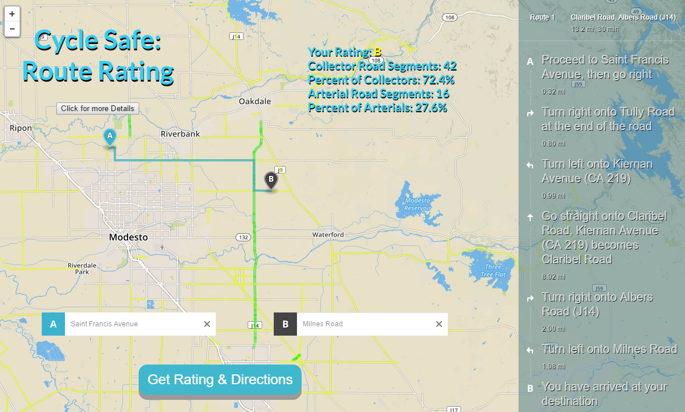
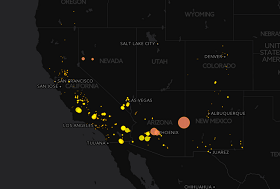
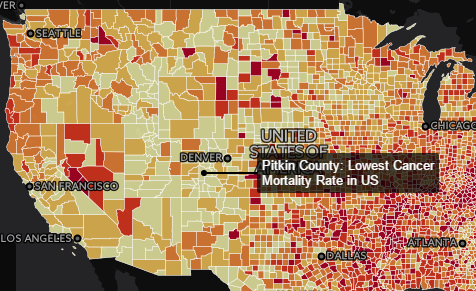
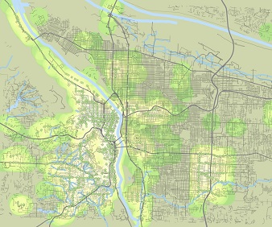

Devin Rocco
Mapping and GIS Portfolio
Below you will find a selection of final and conceptual web projects I have recently designed and worked on

This application was designed on top of mapbox-gl with the use of jQuery and information provided by Washed Ashore. This organization is strongly rooted in arts education. I designed the map to have a playful and creative feel to it rather than have the focus be purely on data display.

This map was built with custom JavaScript code and the Leaflet-Mapbox JavaScript Library and Directions API. It is a sample of an idea I had to assess safety levels of roads for cyclists based on road conditions.

This map was built with custom JavaScript code and the Leaflet JavaScript Library

The map was built using QGIS and CartoDB

Open street map data showing bus stops in Portland, OR
Half-mile buffers were created for all bus-stop features